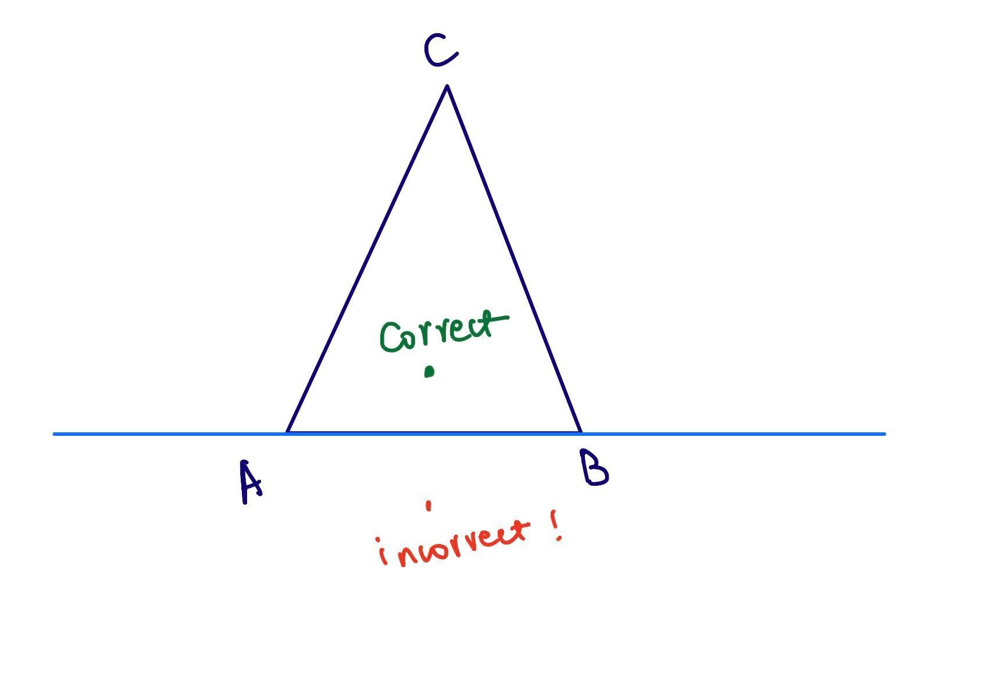
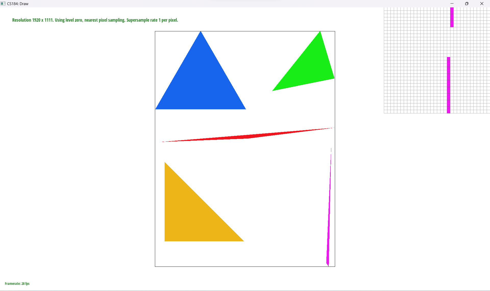
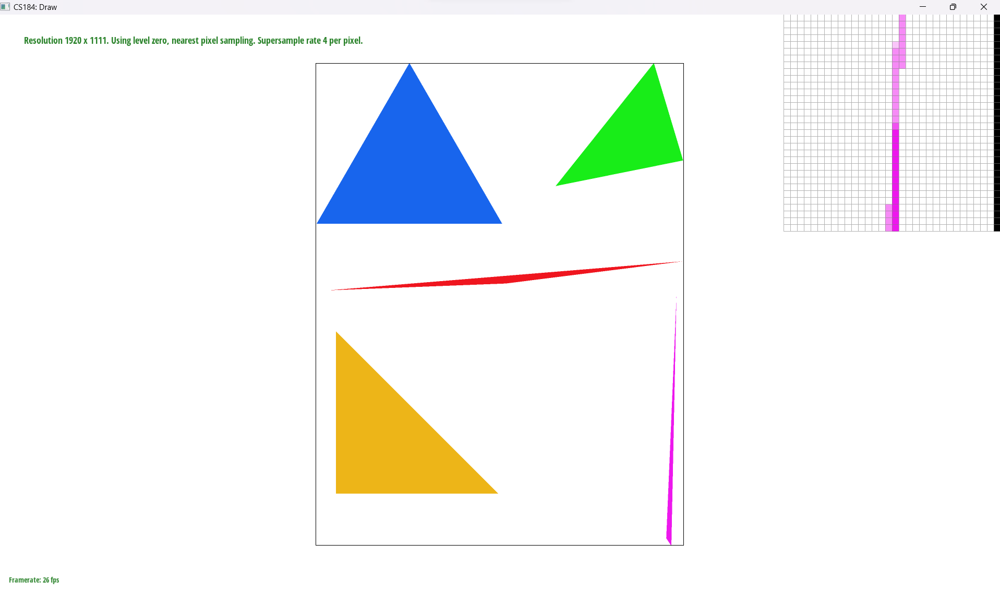

Give a high-level overview of what you implemented in this project. Think about what you've built as a whole. Share your thoughts on what interesting things you've learned from completing the project.
First of all, we determine the bounds for each triangle. Since we can always draw a rectangle around the triangle,
and have all points inside the triangle be in the rectangle, there's no need for us to iterate through the whole image.
We only need to iterate through every pixel inside the bounding box.
Next, we perform a check for each pixel to see if it's inside the boundary
of the triangle. We did that by looking at if a point was on the "correct" side of an edge of the triangle. If it's on the correct side for all three edges, then the point is in the triangle. A point is considered
to be on the correct side if it's on the same side as the third vertex. In this example here, the green point would be on the correct side,
because it's in the same half plane as the third vertex, C. To determine which half plane the target point is in, we plugged in the coordinates
of the point and the third vertex C into the implicit line equation. If the target point and the third vertex C we used as a check had the same
sign, then the target point was on the correct half plane.
Finally, we fill in the color for the pixel if it's in the triangle.

Here's the result on test4. Note that there were some aliasing effect on the top of the pink triangle.

sqrt(sample_rate) * sqrt(sample_rate) of smaller squares (pixels).
For each sub pixel, we perform a check to see if it's inside the triangle. If it is, we store this information of this pixel into our sample_buffer. Therefore, the dimension of our sample buffer is sqrt(sample_rate) * image_width by sqrt(sample_rate) * image_height.
Then, after we filled in all the sub pixel values, we convert our sample_buffer into framebuffer, which was what's actually displayed on the screen. We did this by dividing the sample_buffer into squares of size sqrt(sample_rate) * sqrt(sample_rate), then
took the average of the four pixel colors to obtain the final color for the actual pixel which was displayed.
|
|
 |
|
If you are not participating in the optional art competition, don't worry about this section!